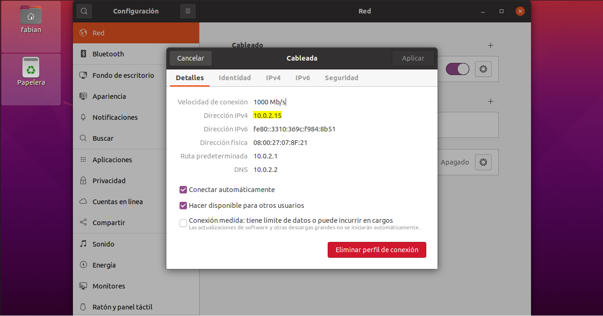

El servidor DHCP (Dynamic Host Configuration Protocol) es un servidor de red que permite la asignación automática de direcciones IP, gateways predeterminadas y otros parámetros de red necesarios para los clientes. Este sistema se encarga de enviar automáticamente todos los parámetros para que los clientes puedan comunicarse sin problema dentro de la red.
En la configuración y administración de servidores de ámbito educativo y empresarial, una de las tecnologías más usadas es isc-dhcp-server, una solución completa de código abierto para implementar servidores DHCP, agentes de retransmisión y clientes.
Teniendo una correcta configuración del servidor dentro de una red, es posible asignar automáticamente direcciones IP a todos los clientes que se conecten a dicha red.
Se debe instalar el servidor dhcp-isc-server en una máquina virtual de linux, con el comando:
sudo apt-get install isc-dhcp-server
Se asigna una dirección IP estática en la máquina que va a operar como servidor DHCP. Para nuestro caso, se le asignó la IP 10.0.2.2
Configurar el archivo ubicado en /etc/dhcp/dhcpd.conf.
Como características relevantes, este archivo va a contener lo siguiente:
Reiniciar el servidor para que tome los cambios
Verificar la interfaz de red que tomó las configuraciones realizadas anteriormente con ayuda del comando ifconfig
Como se aprecia en la imagen anterior, la interfaz de red que tomó la configuración es enp0s3
Modificar el archivo ubicado en /etc/default/isc-dhcp-server y asignar la interfaz enp0s3 en el apartado INTERFACESv4
Reiniciar el servidor para que tome los cambios
Verificar el estado del servicio con el comando sudo systemctl status isc-dhcp-server
Encender la máquina virtual del cliente y verificar la dirección IPv4 que le asignó el servidor DHCP
Como se aprecia, el cliente tomó la dirección IP 10.0.2.15, la cual se encuentra dentro del rango de direcciones asignado por el servidor DHCP
Verificar nuevamente el estado del servidor con el comando sudo systemctl status isc-dhcp-server
Como se aprecia, el cliente se conectó satisfactoriamente al servidor DHCP, y entre ambos comparten peticiones y paquetes DHCPACK y DHCPREQUEST, los cuales fueron necesarios para la correcta asignación de la dirección IP a través de DHCP.
Con el paso anterior, se concluye que se realizó una correcta instalación, configuración y puesta en marcha del servidor DHCP